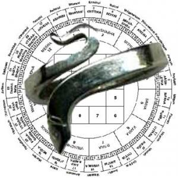
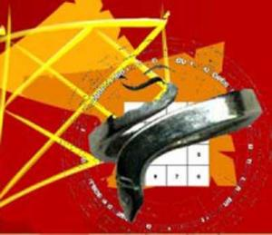

| कालसर्प योग (Kal Sarp Dosha) |
|---|
 |
कालसर्प योग (Kal Sarp Dosha) भी शुभ फल देता है
कुण्डली में राहु और केतु की उपस्थिति के अनुसार व्यक्ति को कालसर्प योग (Kalsarp Dosha) लगता है. कालसर्प योग को अत्यंत अशुभ योग माना गया है. ज्योतिषशास्त्र के अनुसार यह योग जिस व्यक्ति की कुण्डली में होता है उसका पतन होता है.यह इस योग का एक पक्ष है जबकि दूसरा पक्ष यह भी है कि यह योग व्यक्ति को अपने क्षेत्र में सर्वक्षेष्ठ बनता है।
- कालसर्प योग (Kalsarp Yoga) का प्राचीन ज्योतिषीय ग्रंथों में विशेष जिक्र नहीं आया है.तकरीबन सौ वर्ष पूर्व ज्योर्तिविदों ने इस योग को ढूंढ़ा.इस योग को हर प्रकार से पीड़ादायक और कष्टकारी बताया गया.आज बहुत से ज्योतिषी इस योग के दुष्प्रभाव का भय दिखाकर लोगों से काफी धन खर्च कराते हैं.ग्रहों की पीड़ा से बचने के लिए लोग खुशी खुशी धन खर्च भी करते हैं.परंतु सच्चाई यह है कि जैसे शनि महाराज सदा पीड़ा दायक नहीं होते उसी प्रकार राहु और केतु द्वारा निर्मित कालसर्प योग हमेंशा अशुभ फल ही नहीं देते.
- अगर आपकी कुण्डली में कालसर्प योग (Kalsarp Yoga) है और इसके कारण आप भयभीत हैं तो इस भय को मन से निकाल दीजिए.कालसर्प योग से भयाक्रात होने की आवश्यक्ता नहीं है क्योंकि ऐसे कई उदाहरण हैं जो यह प्रमाणित करते हैं कि इस योग ने व्यक्तियों को सफलता की ऊँचाईयों पर पहुंचाया है.कालसर्प योग से ग्रसित होने के बावजूद बुलंदियों पर पहुंचने वाले कई जाने माने नाम हैं जैसे धीरू भाई अम्बानी, सचिन तेंदुलकर, ऋषिकेश मुखर्जी, पं. जवाहरलाल नेहरू, लता मंगेशकर आदि.
|
- ज्योतिषशास्त्र कहता है कि राहु और केतु छाया ग्रह हैं जो सदैव एक दूसरे से सातवें भाव में होते हैं.जब सभी ग्रह क्रमवार से इन दोनों ग्रहों के बीच आ जाते हैं तब यह योग बनता है. राहु केतु शनि के समान क्रूर ग्रह माने जाते हैं और शनि के समान विचार रखने वाले होते हैं.राहु जिनकी कुण्डली में अनुकूल फल देने वाला होता है उन्हें कालसर्प योग में महान उपलब्धियां हासिल होती है.जैसे शनि की साढ़े साती व्यक्ति से परिश्रम करवाता है एवं उसके अंदर की कमियों को दूर करने की प्रेरणा देता है इसी प्रकार कालसर्प व्यक्ति को जुझारू, संघर्षशील और साहसी बनाता है.इस योग से प्रभावित व्यक्ति अपनी क्षमताओं का पूरा इस्तेमाल करता है और निरन्तर आगे बढ़ते जाते हैं.
- कालसर्प योग में स्वराशि एवं उच्च राशि में स्थित गुरू, उच्च राशि का राहु, गजकेशरी योग, चतुर्थ केन्द्र विशेष लाभ प्रदान करने वाले होते है.अगर सकारात्मक दृष्टि से देखा जाए तो कालसर्प योग वाले व्यक्ति असाधारण प्रतिभा एवं व्यक्तित्व के धनी होते हैं.हो सकता है कि आपकी कुण्डली में मौजूद कालसर्प योग आपको भी महान हस्तियों के समान ऊँचाईयों पर ले जाये अत: निराशा और असफलता का भय मन से निकालकर सतत कोशिश करते रहें आपको कामयाबी जरूरी मिलेगी.इस योग में वही लोग पीछे रह जाते हैं जो निराशा और अकर्मण्य होते हैं परिश्रमी और लगनशील व्यक्तियों के लिए कलसर्प योग राजयोग देने वाला होता है.
- कालसर्प योग (Kalsarp Yoga) में त्रिक भाव एवं द्वितीय और अष्टम में राहु की उपस्थिति होने पर व्यक्ति को विशेष परेशानियों का सामना करना होता है परंतु ज्योतिषीय उपचार से इन्हें अनुकूल बनाया जा सकता है.
|
 |
ज्योतिष में अशुभ कालसर्प दोष (The Effect of Kalsarpa Dosha According to Astrology)
कज्योतिषशास्त्र में ग्रहों की स्थिति से बनने वाले शुभ योग हैं तो कुछ अशुभ योग भी हैं.कालसर्प दोष भी प्रमुख अशुभ योगों में से है..राहु केतु की स्थिति के अनुसार कालसर्प योग के कई प्रकार हैं.सभी कालसर्प योग अपने क्षेत्र विशेष में अशुभ परिणाम देते हैं।
- तक्षक कालसर्प: (Takshak Kalsarpa Dosha)
यह कालसर्प योग पारिवारिक एवं गृहस्थ सुख के सम्बन्ध में विशेष रूप से अशुभ फल देने वाला होता है.तक्षक कालसर्प योग कुण्डली में तब बनता है जबकि राहु सप्तम भाव में स्थित हो और केतु लग्न में विराजमान हो (Rahu in Seventh House & Ketu in Lagna) एवं अन्य ग्रह इन दोनों ग्रहों के मध्य स्थित हों तब यह योग बनता है.तक्षक कालसर्प योग से पीड़ित होने पर शुभ ग्रहों का प्रभाव कम हो जाता है जिससे व्यक्ति को कुण्डली में स्थिति शुभ ग्रह योग का फल अपूर्ण रह जाता है और व्यक्ति को कालसर्प योग का नीच परिणाम भुगतना पड़ता है.
|
- तक्षक कालसर्प योग का परिणाम: (Effect of Takshak Kalsarpa Yoga)
जिनकी कुण्डली में तक्षक कालसर्प योग बनता है वे स्त्री वर्ग के साथ सामंजस्य पूर्ण सम्बन्ध नहीं बना पाते हैं.जीवनसाथी के प्रति उदासीनता के कारण गृहस्थ जीवन का सुख बाधित होता है.यह योग गुप्तांग सम्बन्धी रोग भी देता है जो संतान के सम्बन्ध में शुभ नहीं होता है.संभव है कि इस योग से पीड़ित व्यक्ति संतान सुख के सम्बन्ध में भाग्यशाली नहीं हों.तक्षक कालसर्प चारित्रिक दोष भी देता है जिसके कारण अगर मन पर संयम नहीं रखें तो इस योग वाले व्यक्ति के विवाहेत्तर सम्बन्ध भी हो सकते हैं. इस योग से प्रभावित व्यक्ति को सदा सावधान और सतर्क रहने की आवश्यकता होती है क्योंकि यह योग मित्रों द्वारा मिलने वाले विश्वासघात की संभावना को प्रबल करता है.धन सम्पत्ति के सम्बन्ध में भी यह योग अशुभ फलदायी है.यह योग पैतृक सम्पत्ति से मिलने वाले सुख में कमी लाता है.व्यक्ति शत्रुओं के कारण परेशान होता है और इन्हें जेल की यात्रा भी करनी पड़ती है.जीवन में उतार चढ़ाव और संघर्षमय स्थिति बनी रहती है.
- कर्कोटक कालसर्प योग: (Karkotak Kalsarpa Dosha)
कार्कोटक कालसर्प योग भी अशुभ कालसर्प योगों में से एक है.यह अशुभ योग तब निर्मित होता है जब केतु द्वितीय में होता है और राहु अष्टम में (Ketu in Second House & Rahu in Eighth house) स्थित होकर शेष ग्रहों को निगल लेता है अर्थात इनके बीच में सभी ग्रह होने पर यह योग बनता है.इस योग का अशुभ प्रभाव जीवन में समय समय पर दृष्टिगोचर होता रहता है.व्यक्ति मानसिक तौर पर परेशान रहता है.
- कार्कोटक कालसर्प योग का परिणाम: (Effect of Karkotak Kalsarpa Yoga)
जिनकी कुण्डली में कार्कोटक कालसर्प योग होता है उन्हें किसी भी कार्य में जल्दी सफलता नहीं मिलती है क्योंकि इनका भाग्य कमज़ोर होता है.इन्हें जो कुछ भी प्राप्त होता है अपनी मेहनत से मिलता है.अगर इन्हें भाग्य का फल मिलता भी है तो काफी उम्र गुजर जाने के बाद जबकि अवसर सिमित हो जाते हैं.इनका जीवन संघर्षमय रहता है और बार बार असफलता का स्वाद चखना होता है.इनके मित्रों की संख्या सीमित होती है और जो भी मित्र होते हैं वे अवसर का लाभ उठाने की ताक में रहते हैं जिसके कारण मित्रों से भी इन्हें सहयोग एवं समर्थन नहीं मिल पाता है.आर्थिक विषयों में भी यह योग अशुभ फलदायी होता है.रोजी रोजगार में नुकसान और परेशानी बनी रहती है.पैतृक सम्पत्ति से मिलने वाले सुख में भी यह कमी लाता है.इनके साथ दुर्घटना होने की संभावना भी प्रबल रहती है।
- शंखनाद कालसर्प: (Shankhnaad Kalsarpa Dosha)
शंखनाद कालसर्प योग को शंखचूड़ कालसर्प योग (Shankchood Kalsarpa Yoga) के नाम से भी जाना जाता है.कुण्डली में यह योग तब उपस्थित होता है जबकि राहु नवम भाव में होता है और केतु तृतीय (Rahu in ninth house and Ketu in Third) भाव में स्थित होता है एवं शेष ग्रह इनके मध्य स्थित होते हैं.इस योग को दुर्भाग्य सूचक माना जाता है क्योकि राहु केतु की इस स्थिति से भाग्य को ग्रहण लगता है.यह योग कामयाबी के सफर में बाधक होता है.
- शंखनाद कालसर्प योग का परिणाम: (Result of Shanknaad Kalsarpa Yoga)
शंखनाद कालसर्प योग से पीड़ित व्यक्ति गृहस्थ जीवन में असंतुष्ट और दु:खी रहता है.भाग्य से इन्हें लाभ नहीं मिल पाता है, कार्यों में बार बार असफलता और अपमान भी इन्हें झेलना पड़ता है.कारोबार एवं नौकरी के सम्बन्ध में भी यह योग विपरीत प्रभाव देता है जिसके कारण व्यक्ति को अपनी मेहनत के अनुरूप लाभ नहीं मिल पाता है.शत्रुओं का भय बना रहता है.शुभ ग्रह योग से अगर ये उच्च स्थिति को प्राप्त कर भी लेते हैं तो इस अशुभ योग के कारण इन्हें अवनति का मुंह देखना होता है.
|